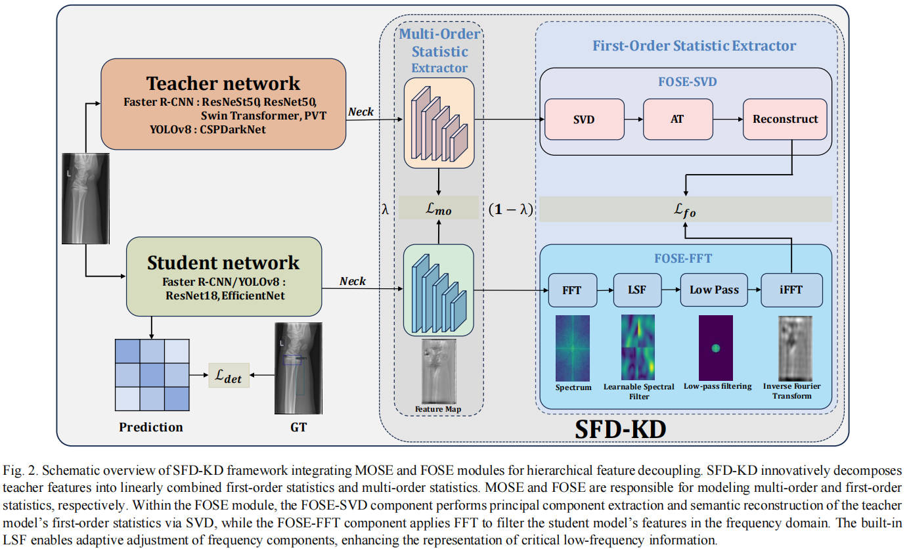
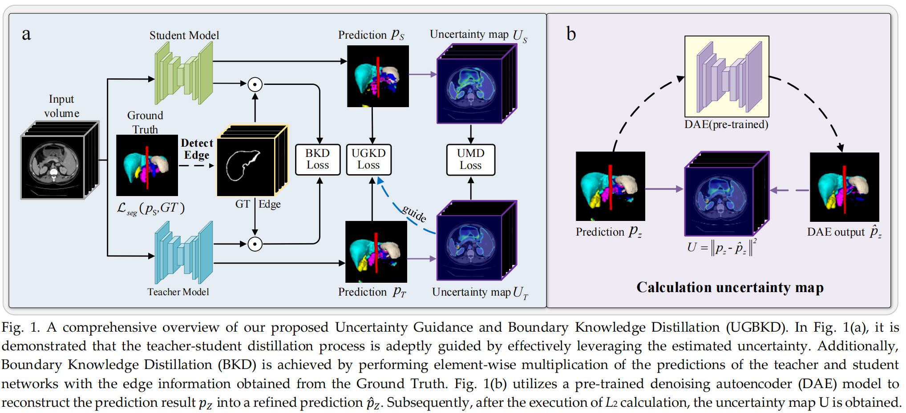
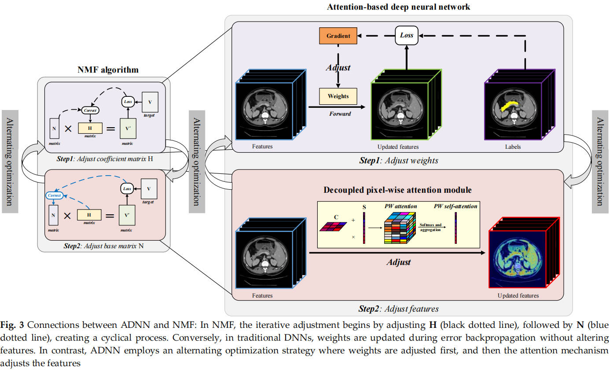

科研成果
SFD-KD: Structured Feature Decoupling Knowledge Distillation for Fracture Detection
abstract: 注意力机制已经成为医学图像分割中的一个重要组成部分。基于注意力的深度神经网络(ADNN)主要用于迭代计算输入层和权重参数的梯度。我们的研究表明，ADNN的优化轨迹与非负矩阵分解(NMF)有显著的相似之处，后者涉及基矩阵和系数矩阵的交替调整。这种相似性意味着交替优化策略--其特征是通过注意机制调整输入特征和调整网络权重--是注意机制在ADNN中的有效性的核心。类比NMF方法，我们主张对ADNN内的输入层进行逐个像素的调整。此外，为了减少计算负担，我们还开发了一个解耦的像素化注意模块(DPAM)和一个自我注意模块(DPSM)。这些模块被设计来对抗在执行多器官分割时不同器官之间的高类间相似度带来的挑战。将我们的DPAM和DPSM集成到传统网络体系结构中，有助于创建一个NMFinspirred ADNN框架，称为DPC-Net，它有两种变体：用于注意力的DPCA-Net和用于自我关注的DPCSNet。
Enhancing 3D Multi-Organ Segmentation via Uncertainty Guidance and Boundary Knowledge Distillation
abstract: 在本研究中，我们提出了一种新的知识蒸馏框架，旨在提高学生网络在三维多器官分割中的性能。该框架集成了三个关键策略：不确定性引导的知识提炼、学习难度挖掘机制和边界知识提炼。方法：首先，使用具有解剖知觉先验的预先训练的去噪自动编码器(DAE)来估计预测不确定性。通过不确定性引导的知识提炼策略，促进教师网络中一致性预测知识的传递。随后，为了进一步提高学生网络在具有挑战性的区域中的分割性能，引入了一种学习难度挖掘机制，该机制专注于对学生网络造成最大困难的领域。最后，考虑到边界信息在三维医学图像分割中的重要性，实现了边界知识的提炼，从教师网络中提取并传递关键的边界信息，从而增强了学生网络的边界感知能力。
Decoupled Pixel-wise Correlation for Abdominal Multi-organ Segmentation
abstract: 注意力机制已经成为医学图像分割中的一个重要组成部分。基于注意力的深度神经网络(ADNN)主要用于迭代计算输入层和权重参数的梯度。我们的研究表明，ADNN的优化轨迹与非负矩阵分解(NMF)有显著的相似之处，后者涉及基矩阵和系数矩阵的交替调整。这种相似性意味着交替优化策略--其特征是通过注意机制调整输入特征和调整网络权重--是注意机制在ADNN中的有效性的核心。类比NMF方法，我们主张对ADNN内的输入层进行逐个像素的调整。此外，为了减少计算负担，我们还开发了一个解耦的像素化注意模块(DPAM)和一个自我注意模块(DPSM)。这些模块被设计来对抗在执行多器官分割时不同器官之间的高类间相似度带来的挑战。将我们的DPAM和DPSM集成到传统网络体系结构中，有助于创建一个NMFinspirred ADNN框架，称为DPC-Net，它有两种变体：用于注意力的DPCA-Net和用于自我关注的DPCSNet。
